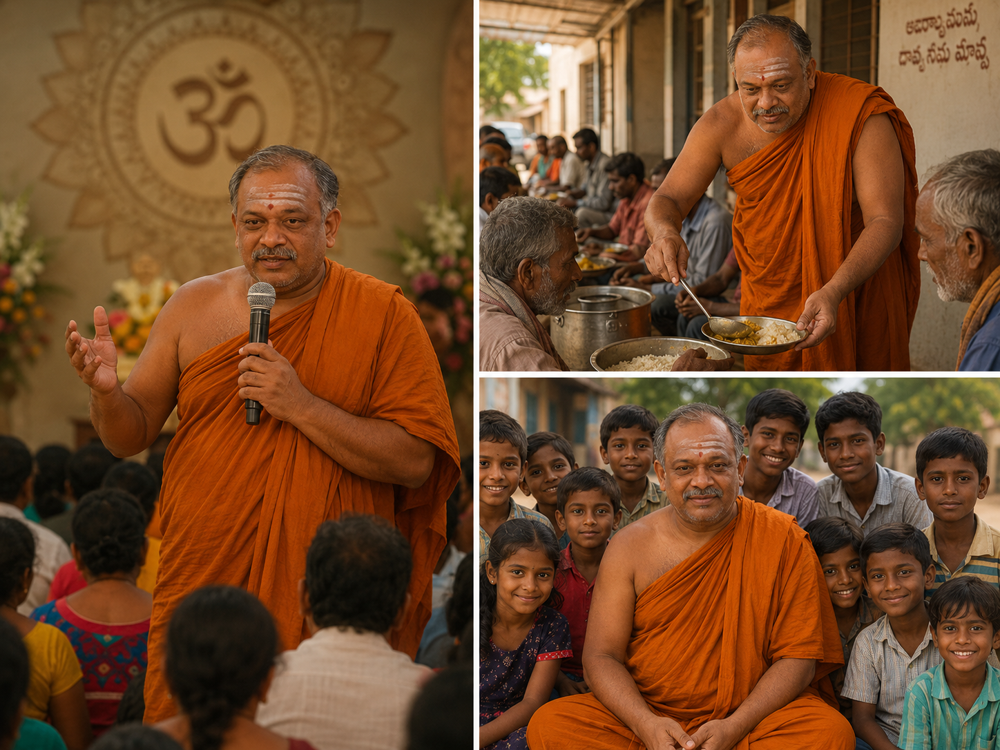
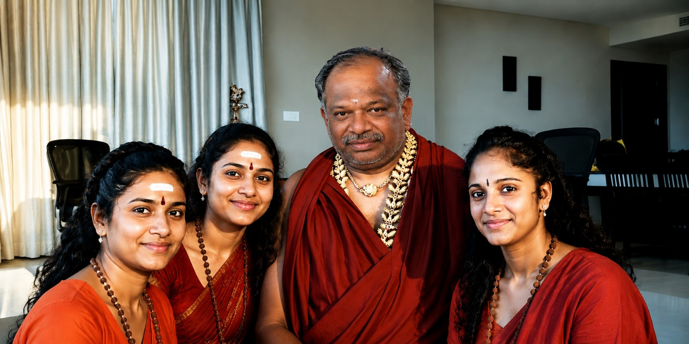

Welcome to Sri Guru Kesavananda Ashram. A sacred place where seekers find peace, spiritual wisdom, clarity, guidance and inner transformation.
Learn MoreTo guide individuals towards inner peace, self-discovery, spiritual growth and positive living through wisdom, compassion and service.
For more than three decades, Sri Guru Kesavananda has helped people from different walks of life find strength, confidence and direction during difficult times.
Explore moments from the Ashram, spiritual gatherings, and the journey of devotees seeking guidance and blessings.


Personal guidance for life's important decisions.
Special blessings for peace, wellbeing and prosperity.
Support and clarity during challenging situations.
MG Road, Avarampalayam,
Coimbatore - 641006
Phone: 9360560989
Contact UsYour generous donations help us continue spiritual guidance, charitable activities, and support devotees seeking peace, wisdom, and direction in life.
nathinv123@okaxis
Scan the QR code using Google Pay, PhonePe, Paytm, or any UPI-enabled application.